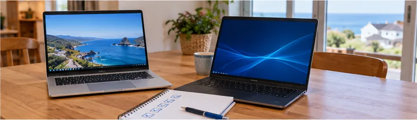

Entre les fiches techniques et les conseils des vendeurs, il est facile de payer pour des options inutiles, ou au contraire de choisir un modèle trop juste. Ce guide reprend les questions que l'on me pose le plus souvent avant un achat, dans l'ordre où il faut se les poser.
1. Partir de votre usage
Avant de regarder les prix, notez ce que vous faites vraiment avec l'ordinateur. C'est ce qui décide de tout le reste.
- Internet, mails, photos, papiers administratifs, visio : un ordinateur simple suffit largement.
- Bureautique au quotidien, études, travail à la maison : un modèle milieu de gamme, avec un bon clavier et un écran confortable.
- Retouche photo poussée, montage vidéo, 3D, jeux : là, il faut de la puissance et souvent une carte graphique dédiée.
La plupart des personnes que j'accompagne sont dans le premier ou le deuxième cas, et se voient pourtant proposer en magasin une machine faite pour le troisième.
2. Portable ou fixe ?
Le portable
Il se déplace d'une pièce à l'autre, part en vacances ou en cours, et prend peu de place. En contrepartie, il se répare moins facilement et son écran est plus petit. Pour la plupart des foyers, c'est le choix le plus pratique.
Le fixe
Il reste au bureau, mais offre un grand écran, un vrai clavier et une souris, et se répare ou s'améliore facilement (disque, mémoire). À puissance égale, il est souvent moins cher. C'est un bon choix si l'ordinateur ne bouge jamais, pour un poste de travail ou pour quelqu'un qui a besoin d'un grand écran.
Astuce : un portable branché sur un écran, un clavier et une souris à la maison donne le confort d'un fixe, tout en restant transportable.
3. Processeur, mémoire, SSD : ce qui compte vraiment
Le disque : SSD indispensable
C'est l'élément qui change le plus la sensation de rapidité. Un ordinateur avec un disque SSD démarre en quelques secondes ; avec un ancien disque dur mécanique, il peut mettre plusieurs minutes. Prévoyez au moins 256 Go, 512 Go si vous gardez beaucoup de photos. Méfiez-vous des modèles très bon marché équipés d'un petit stockage « eMMC » de 64 Go : il se remplit vite et complique les mises à jour.
La mémoire vive (RAM)
8 Go permettent un usage simple. 16 Go sont un bon choix pour être tranquille plusieurs années, surtout si vous ouvrez beaucoup d'onglets ou faites de la visio. Sur certains portables, la mémoire est soudée : ce que vous achetez est ce que vous aurez pour toujours.
Le processeur
Pour un usage courant, un processeur de milieu de gamme (Intel Core i5, AMD Ryzen 5 ou équivalent) est largement suffisant. Les processeurs d'entrée de gamme les plus modestes conviennent à un usage très léger, mais montrent vite leurs limites. Inutile, en revanche, de payer un processeur haut de gamme pour de la bureautique.
Windows 11
Vérifiez que l'ordinateur est livré avec Windows 11 ou qu'il y est compatible : c'est la condition pour recevoir les mises à jour de sécurité. Voir aussi ce qu'implique la fin de Windows 10.
4. Quel ordinateur pour qui ?
Pour un senior ou un débutant
Privilégiez le confort plutôt que la puissance : un grand écran, un clavier avec des touches bien lisibles, un SSD pour ne pas attendre. Le plus important reste la prise en main : un ordinateur bien installé, débarrassé des logiciels inutiles, avec les raccourcis utiles sur le bureau. Je peux accompagner les premiers pas, à domicile.
Pour un lycéen ou un étudiant
Un portable léger, avec une bonne autonomie, un SSD et si possible 16 Go de mémoire. Pour les études d'informatique (spécialité NSI, BTS SIO), un processeur milieu de gamme et 16 Go permettent de faire tourner les outils de programmation et une machine virtuelle sans souci. Je donne aussi des cours de NSI, Python et Linux.
Pour un artisan, un commerçant ou une association
La machine compte moins que ce qui l'entoure : une sauvegarde automatique, une messagerie bien configurée, des mots de passe protégés. Un ordinateur professionnel, conçu pour durer, est souvent un meilleur investissement qu'un modèle grand public. Voir aussi comment mettre en place une sauvegarde.
5. Neuf ou reconditionné ?
Un ordinateur professionnel reconditionné, vendu avec une garantie par un vendeur sérieux, offre souvent plus de qualité pour le même prix qu'un modèle neuf d'entrée de gamme : châssis plus solide, meilleur clavier, pièces remplaçables. Acheté auprès d'un professionnel, il reste couvert par la garantie légale de conformité.
Le neuf garde l'avantage pour les usages exigeants (montage vidéo, jeux) et pour qui veut la dernière génération. J'explique la différence en détail sur ma page ordinateur reconditionné.
6. Quel budget prévoir ?
Plutôt qu'un montant fixe, retenez cette règle : le budget suit l'usage. Pour internet, la bureautique et les photos, un portable professionnel reconditionné, comme ceux que je propose entre 350 et 450 € installés, couvre largement les besoins pendant plusieurs années. Au-delà, vous payez surtout de la puissance utile pour la vidéo, la 3D ou le jeu.
Pensez aussi au coût sur la durée : un modèle qui ne se répare pas (batterie collée, mémoire soudée) peut finir par coûter plus cher qu'un modèle un peu plus cher au départ mais réparable.
7. Les erreurs à éviter
- Acheter selon la puissance affichée plutôt que selon votre usage réel.
- Choisir un modèle sans SSD, ou avec un petit stockage eMMC.
- Se laisser imposer un antivirus payant ou un pack d'installation en caisse : Windows intègre déjà une protection, et l'installation peut se faire chez vous.
- Croire une « remise » calculée sur un prix de départ gonflé : comparez le prix sur plusieurs sites.
- Négliger le clavier et l'écran, qu'on utilise pourtant tous les jours.
- Oublier de récupérer ses données et ses mots de passe avant de se séparer de l'ancien ordinateur.
- Acheter d'occasion un ordinateur qui ne peut pas passer à Windows 11.
Les soldes, le Black Friday et la rentrée sont de bonnes périodes pour acheter, à condition de savoir à l'avance ce que l'on cherche.
8. Et si vous gardiez votre ordinateur ?
Avant de racheter, vérifiez si votre machine actuelle peut encore servir. Très souvent, un disque SSD et un peu de mémoire suffisent à lui redonner plusieurs années, pour un coût bien inférieur à un remplacement. Voir les 6 gestes avant de changer d'ordinateur.
Un avis avant d'acheter ?
Dites-moi ce que vous faites de votre ordinateur : je vous conseille un modèle adapté à votre besoin et à votre budget, neuf ou reconditionné, puis je l'installe chez vous avec le transfert de vos données. Le conseil est gratuit, même si vous n'achetez rien chez moi. Appelez le 06 41 53 73 34.
Un doute sur votre ordinateur ?
Intervention à domicile à Lannilis, Lesneven, Le Folgoët, Plouguerneau et dans tout le Pays des Abers. 35 €/h, déplacement inclus.